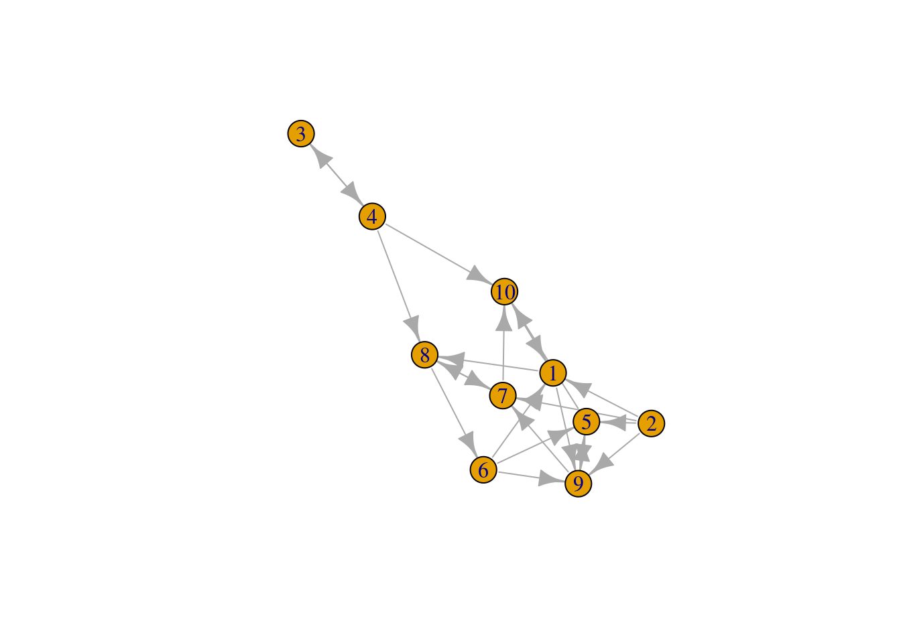

本文参考 HackerBits’s Top 10 data mining algorithms in plain R。
算法细节详见 9.2 基于树的方法(CART)。
library(C50)
library(printr)
# divide into traing data and test data
set.seed(1234)
train.idx = sample(1:nrow(iris), 100)
iris.train = iris[train.idx, ]
iris.test = iris[-train.idx, ]
# train C5.0
model = C5.0(Species ~ ., data = iris.train)
# predict
results = predict(object = model, newdata = iris.test, type = "class")
# confusion matrix
table(results, iris.test$Species)| results/ | setosa | versicolor | virginica |
|---|---|---|---|
| setosa | 12 | 0 | 0 |
| versicolor | 0 | 21 | 3 |
| virginica | 0 | 0 | 14 |
算法细节详见 13.2 原型方法。
# run kmeans
model = kmeans(x = subset(iris, select = -Species), centers = 3)
# check results
table(model$cluster, iris$Species)| / | setosa | versicolor | virginica |
|---|---|---|---|
| 1 | 0 | 46 | 50 |
| 2 | 17 | 4 | 0 |
| 3 | 33 | 0 | 0 |
算法细节详见 12.2 支持向量分类器。
library(e1071)
model = svm(Species ~ ., data = iris.train)
results = predict(object = model, newdata = iris.test, type = "class")
table(results, iris.test$Species)| results/ | setosa | versicolor | virginica |
|---|---|---|---|
| setosa | 12 | 0 | 0 |
| versicolor | 0 | 20 | 1 |
| virginica | 0 | 1 | 16 |
算法细节详见 14.2 关联规则。
library(arules)
data("Adult")
rules = apriori(Adult,
parameter = list(support = 0.4, confidence = 0.7),
appearance = list(rhs = c("race=White", "sex=Male"), default = "lhs"))## Apriori
##
## Parameter specification:
## confidence minval smax arem aval originalSupport maxtime support minlen
## 0.7 0.1 1 none FALSE TRUE 5 0.4 1
## maxlen target ext
## 10 rules FALSE
##
## Algorithmic control:
## filter tree heap memopt load sort verbose
## 0.1 TRUE TRUE FALSE TRUE 2 TRUE
##
## Absolute minimum support count: 19536
##
## set item appearances ...[2 item(s)] done [0.00s].
## set transactions ...[115 item(s), 48842 transaction(s)] done [0.04s].
## sorting and recoding items ... [11 item(s)] done [0.01s].
## creating transaction tree ... done [0.02s].
## checking subsets of size 1 2 3 4 5 done [0.00s].
## writing ... [32 rule(s)] done [0.00s].
## creating S4 object ... done [0.00s].# results
rules.sorted = sort(rules, by = "lift")
top5.rules = head(rules.sorted, 5)
as(top5.rules, "data.frame")| rules | support | confidence | lift | count | |
|---|---|---|---|---|---|
| 2 | {relationship=Husband} => {sex=Male} | 0.4036485 | 0.9999493 | 1.495851 | 19715 |
| 12 | {marital-status=Married-civ-spouse,relationship=Husband} => {sex=Male} | 0.4034028 | 0.9999492 | 1.495851 | 19703 |
| 3 | {marital-status=Married-civ-spouse} => {sex=Male} | 0.4074157 | 0.8891818 | 1.330151 | 19899 |
| 4 | {marital-status=Married-civ-spouse} => {race=White} | 0.4105892 | 0.8961080 | 1.048027 | 20054 |
| 19 | {workclass=Private,native-country=United-States} => {race=White} | 0.5433848 | 0.8804113 | 1.029669 | 26540 |
算法细节详见 8.5 EM 算法。
library(mclust)
model = Mclust(subset(iris, select = -Species))## fitting ...
##
|
| | 0%
|
|= | 1%
|
|= | 2%
|
|== | 2%
|
|== | 3%
|
|=== | 4%
|
|=== | 5%
|
|==== | 6%
|
|===== | 7%
|
|===== | 8%
|
|====== | 9%
|
|======= | 10%
|
|======= | 11%
|
|======== | 12%
|
|======== | 13%
|
|========= | 13%
|
|========= | 14%
|
|========== | 15%
|
|========== | 16%
|
|=========== | 17%
|
|============ | 18%
|
|============ | 19%
|
|============= | 20%
|
|============== | 21%
|
|============== | 22%
|
|=============== | 23%
|
|=============== | 24%
|
|================ | 24%
|
|================ | 25%
|
|================= | 26%
|
|================= | 27%
|
|================== | 28%
|
|=================== | 29%
|
|=================== | 30%
|
|==================== | 31%
|
|===================== | 32%
|
|===================== | 33%
|
|====================== | 34%
|
|======================= | 35%
|
|======================== | 36%
|
|======================== | 37%
|
|========================= | 38%
|
|========================= | 39%
|
|========================== | 39%
|
|========================== | 40%
|
|=========================== | 41%
|
|=========================== | 42%
|
|============================ | 43%
|
|============================= | 44%
|
|============================= | 45%
|
|============================== | 46%
|
|=============================== | 47%
|
|=============================== | 48%
|
|================================ | 49%
|
|================================ | 50%
|
|================================= | 50%
|
|================================= | 51%
|
|================================== | 52%
|
|================================== | 53%
|
|=================================== | 54%
|
|==================================== | 55%
|
|==================================== | 56%
|
|===================================== | 57%
|
|====================================== | 58%
|
|====================================== | 59%
|
|======================================= | 60%
|
|======================================= | 61%
|
|======================================== | 61%
|
|======================================== | 62%
|
|========================================= | 63%
|
|========================================= | 64%
|
|========================================== | 65%
|
|=========================================== | 66%
|
|============================================ | 67%
|
|============================================ | 68%
|
|============================================= | 69%
|
|============================================== | 70%
|
|============================================== | 71%
|
|=============================================== | 72%
|
|================================================ | 73%
|
|================================================ | 74%
|
|================================================= | 75%
|
|================================================= | 76%
|
|================================================== | 76%
|
|================================================== | 77%
|
|=================================================== | 78%
|
|=================================================== | 79%
|
|==================================================== | 80%
|
|===================================================== | 81%
|
|===================================================== | 82%
|
|====================================================== | 83%
|
|======================================================= | 84%
|
|======================================================= | 85%
|
|======================================================== | 86%
|
|======================================================== | 87%
|
|========================================================= | 87%
|
|========================================================= | 88%
|
|========================================================== | 89%
|
|========================================================== | 90%
|
|=========================================================== | 91%
|
|============================================================ | 92%
|
|============================================================ | 93%
|
|============================================================= | 94%
|
|============================================================== | 95%
|
|============================================================== | 96%
|
|=============================================================== | 97%
|
|=============================================================== | 98%
|
|================================================================ | 98%
|
|================================================================ | 99%
|
|=================================================================| 100%table(model$classification, iris$Species)| / | setosa | versicolor | virginica |
|---|---|---|---|
| 1 | 50 | 0 | 0 |
| 2 | 0 | 50 | 50 |
算法细节详见 14.10 谷歌的 PageRank 算法
library(igraph)
library(dplyr)
# generate a random directed graph
set.seed(111)
g = random.graph.game(n = 10, p.or.m = 1/4, directed = TRUE)
plot(g)
# calculate the pagerank for each object
pr = page.rank(g)$vector
# view results
df = data.frame(Object = 1:10, PageRank = pr)
arrange(df, desc(PageRank))| Object | PageRank |
|---|---|
| 1 | 0.1536549 |
| 8 | 0.1533286 |
| 9 | 0.1508308 |
| 7 | 0.1474552 |
| 10 | 0.1326519 |
| 5 | 0.1050039 |
| 6 | 0.0801646 |
| 4 | 0.0365532 |
| 3 | 0.0253568 |
| 2 | 0.0150000 |
算法细节详见 10.1 boosting 方法。
library(adabag)
model = boosting(Species ~ ., data = iris.train)
results = predict(object = model, newdata = iris.test, type = "class")
results$confusion| Predicted Class/Observed Class | setosa | versicolor | virginica |
|---|---|---|---|
| setosa | 12 | 0 | 0 |
| versicolor | 0 | 20 | 1 |
| virginica | 0 | 1 | 16 |
算法细节详见 k 最近邻分类器。
library(class)
results = knn(train = subset(iris.train, select = -Species),
test = subset(iris.test, select = -Species),
cl = iris.train$Species)
table(results, iris.test$Species)| results/ | setosa | versicolor | virginica |
|---|---|---|---|
| setosa | 12 | 0 | 0 |
| versicolor | 0 | 20 | 1 |
| virginica | 0 | 1 | 16 |
算法细节详见 6.6 核密度估计和分类。
model = naiveBayes(x = subset(iris.train, select = -Species),
y = iris.train$Species)
results = predict(object = model, newdata = iris.test, type = "class")
table(results, iris.test$Species)| results/ | setosa | versicolor | virginica |
|---|---|---|---|
| setosa | 12 | 0 | 0 |
| versicolor | 0 | 21 | 1 |
| virginica | 0 | 0 | 16 |
算法细节详见 9.2 基于树的方法(CART)。
library(rpart)
model = rpart(Species ~ ., data = iris.train)
results = predict(object = model, newdata = iris.test, type = "class")
table(results, iris.test$Species)| results/ | setosa | versicolor | virginica |
|---|---|---|---|
| setosa | 12 | 0 | 0 |
| versicolor | 0 | 21 | 3 |
| virginica | 0 | 0 | 14 |
Copyright © 2016-2019 weiya